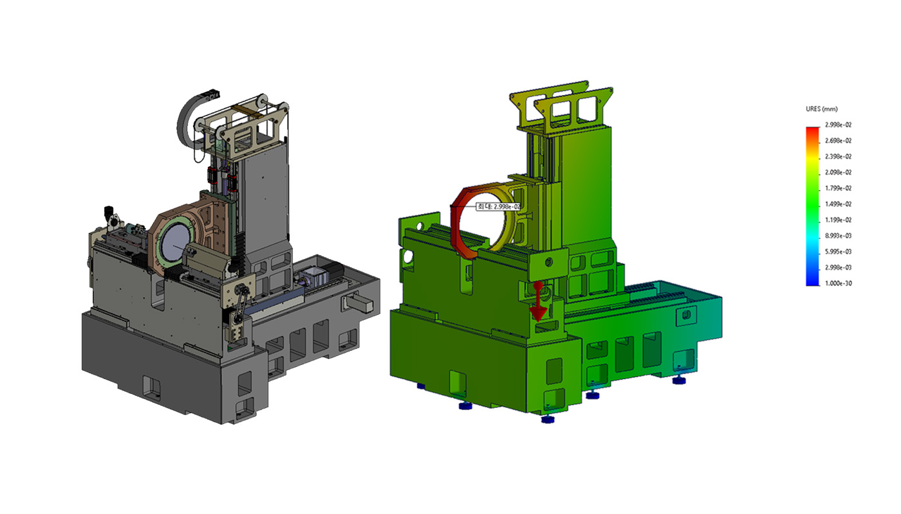
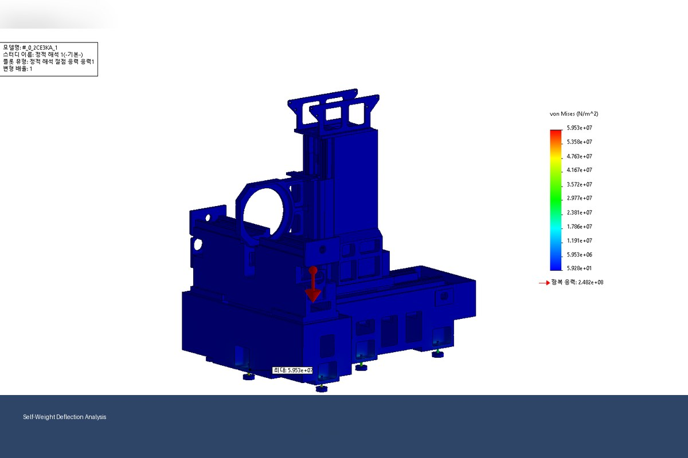
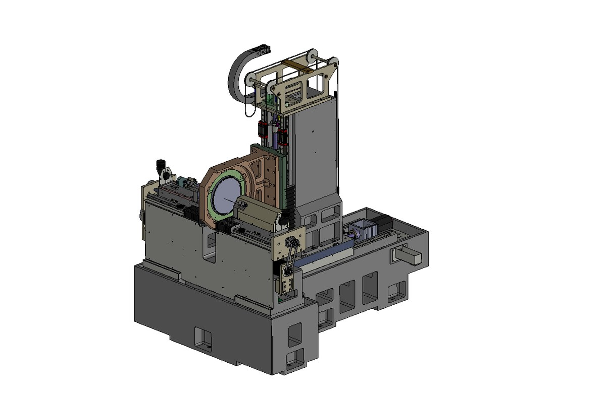

양면 웨이퍼 드릴링 장비 처짐 검토
초정밀 장비의 스트로크 변경과 자중 처짐 구조해석
구조해석정적해석처짐검토
프로젝트 개요
대구경 SiC 웨이퍼 대응을 위해 장비 스트로크를 확장하면서, 구조 변경 후 자중에 의한 처짐을 검토한 프로젝트입니다. 기존 구동부를 최대한 유지하며 사양 변경에 따른 비용과 일정을 최소화했습니다.
수행 내용
- SiC 웨이퍼 양면 드릴링 장비 구조 변경
- 대구경 웨이퍼 대응을 위한 스트로크 확장
- 기존 기구물 재활용을 고려한 설계 검토
- 자중에 의한 응력 및 처짐 검토
Project Images
대표 이미지
보안상 세부 치수와 고객사 식별 정보는 제외하고, 포트폴리오용으로 일반화하여 표시합니다.


